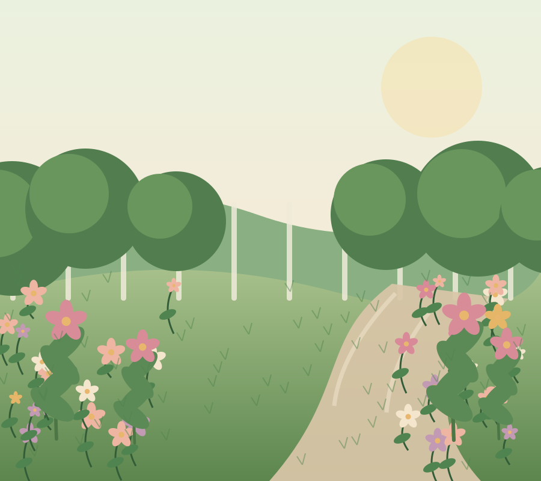
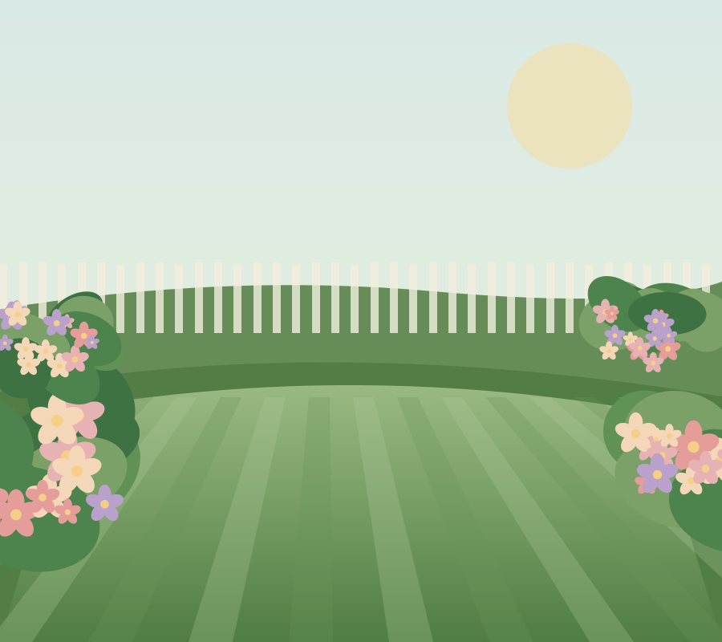
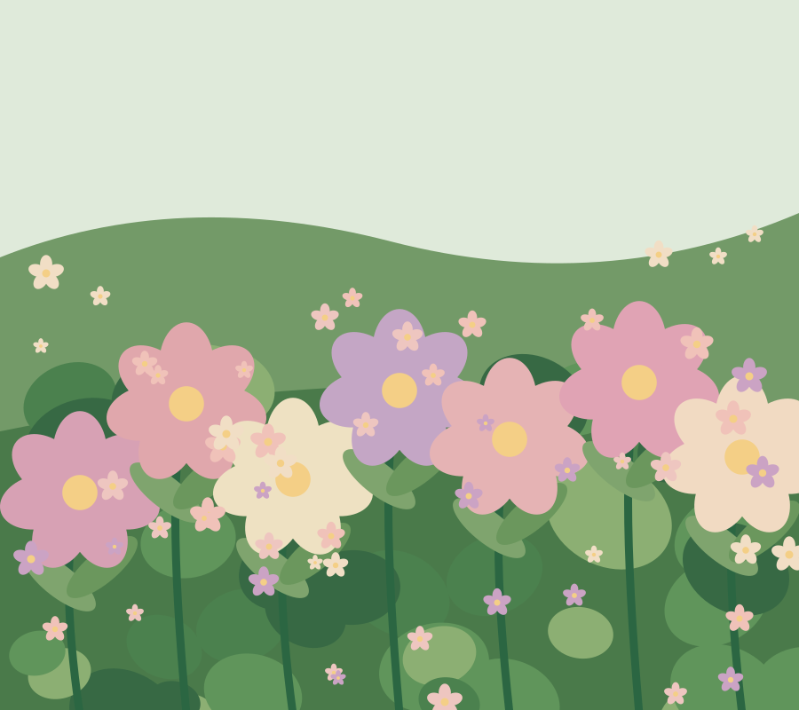
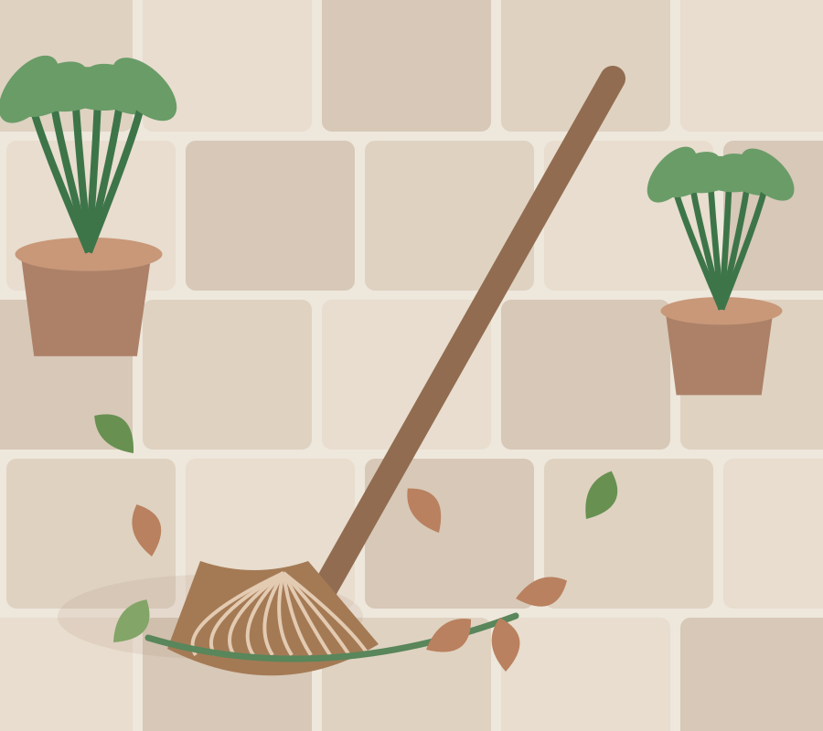
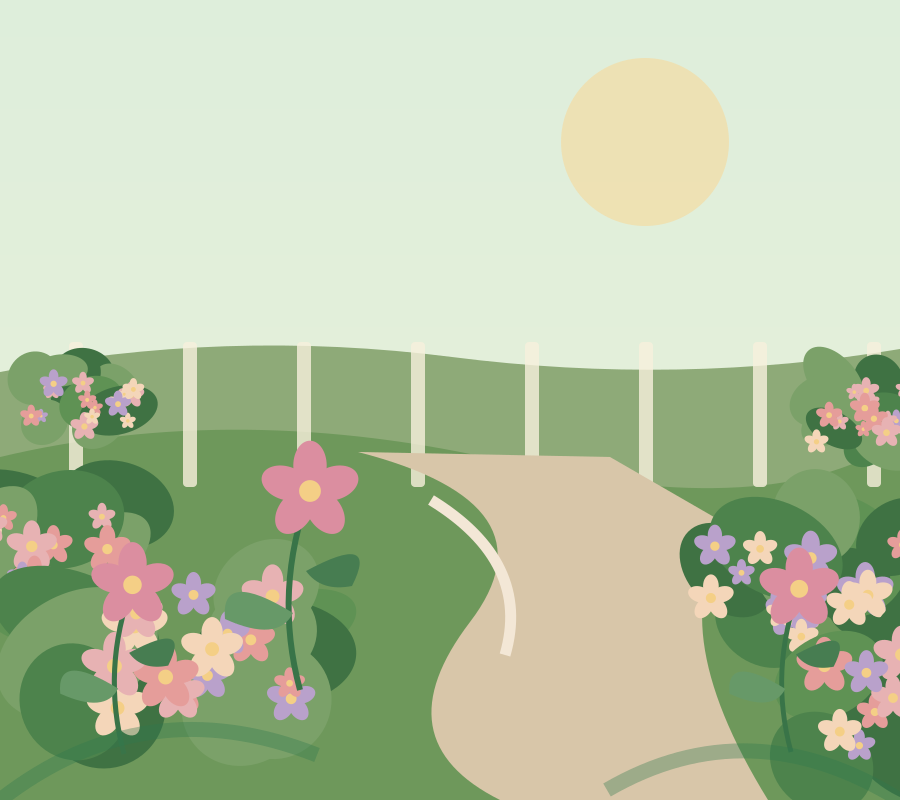

HELLO FROM GEORGE'S BLOOM & BROOM
Your garden,
with a little more love.
From unruly lawns to flowerbeds that need a little TLC, we're here to help make your outdoor space a place you love spending time in.
Friendly garden care, without the fuss.
Big jobs, small jobs, and everything in between.

spaces bloom.
Explore our garden services
Hover over an area of the garden to reveal the service name, or tap an area on mobile.
Hover to reveal · Tap on mobileNot sure which part of your garden needs attention? Tell George about your garden and take it from there. All service examples are provisional until George confirms what he offers.
GROW WITH CARE
Garden care with a neighbourly feel.
There's something special about stepping outside to a garden that feels just right.
At George's Bloom & Broom, the idea is simple: friendly, practical help to keep lawns, borders and outdoor spaces looking their best — so you can get back to enjoying them.
A little corner of lovely.
The sort of green spaces that make you want to put the kettle on and sit outside a while.




Illustrative photographs and artwork — these are not presented as George's completed projects. Real project photos can be added once available. Photo licensing.
Your garden's next chapter
starts with a hello.
Say hello
Tell us your name and a little about your garden.
Show us what needs doing
From mowing to a full tidy-up, let us know what you'd like help with.
Let's make a plan
We'll discuss the work and the next steps before anything begins.
Have a garden
job in mind?
Whether it's a little trim or a garden that needs some serious TLC, we'd love to hear what you have in mind.
No question is too small.
Tell us about your garden
Just a few details to get the conversation started.
Your enquiry is ready
Nothing has been sent. Copy these details and use them once George's contact information is connected.
A few little
questions.
Every garden is different. Here's a simple place to start.
Can I ask about a one-off garden tidy?
Absolutely — let George know whether you're thinking about a single visit or something more regular, and he can discuss what's possible.
What if I'm not sure what service I need?
No problem. Describe the garden job in your own words using the enquiry section; you don't need to know the gardening terminology.
Can I request a quote first?
Yes. Share a little about the space and what you'd like done, so the work and possible next steps can be discussed.
Which areas do you cover?
George's local service area is being confirmed. Include your postcode when you enquire to help check whether your garden is within reach.